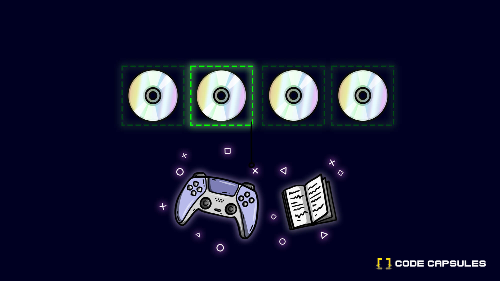

Building a Game Catalogue API

APIs are a common way to expose data and information on the internet. Many web services and apps run off of multiple APIs in the background. Because APIs are so ubiquitous, it is very useful to learn the basics of how to build one.
In this tutorial, we'll build a simple HTTP REST API to provide Create, Read, Update and Delete (CRUD for short) functions for a personal game catalogue. We'll secure it with HTTP Basic authentication, while allowing for an easy upgrade to a more secure scheme.
We'll use MySQL as the data store, Node.js as the application language, and Code Capsules to host all the components.
Overview and Requirements
You'll need the following services and software set up for this tutorial:
- Git setup and installed, and a registered GitHub account.
- Node.js installed.
- A registered Code Capsules account.
- An IDE or text editor to create the project in. This tutorial was made using Visual Studio Code, but you can use any tool you like.
- The Postman app to interact with our API.
Setting up the Project
With our requirements in place, we can get started setting them up to work as needed for our game catalogue project.
Creating a New Repo
We need a place to store our code from which Code Capsules can deploy to a Capsule.
Head over to GitHub and create a new repo. We're calling it game-api here, but you can give it any name. Choose a Node .gitignore file to get started. Then clone the new GitHub repo onto your computer and navigate to that directory in a terminal (or command prompt, if you're on Windows).
Initialising the Base Project
We'll use the Express generator to create the project base. Express is a lightweight web framework for Node.js. To create the base project, type in the following:
npx express-generator --no-view
npm install
This creates a few files and folders that we can edit. The --no-view option tells the generator to skip adding an HTML view engine. This is because we don't need any views for an API.
The command npm install downloads and installs all the dependencies and packages required by the base project. Open the folder with Visual Studio Code or an editor of your choice, and browse through the files to get familiar with them. The app.js file in the project root is the main entry point for the app.
Great, it's time to push this boilerplate project up to Git. We can do it with the following commands, from the command prompt or terminal:
git add .
git commit -am 'added base files for project'
git push origin
Create the Capsules
A Capsule provides the server for hosting an application on Code Capsules.
Navigate to the "Spaces" tab and open the Space you’ll be using.
Click the "Create a New Capsule for Your Space" button, and follow the instructions below to create a Data Capsule:
- Choose "Data Capsule".
- Under "Data Type", select "MySQL Database Cluster".
- Under "Product", select "Standard".
- Click "Create Capsule".
Navigate to the "Space" containing your recently created Data Capsule and click the "New Capsule" button. Follow the instructions below to create a Backend Capsule:
- Choose "Backend Capsule".
- Under "Product", select "Sandbox".
- Choose the GitHub repository you forked.
- Press "Next".
- Leave "Run Command" blank.
- Click "Create Capsule".
Code Capsules will automatically build your application when you’ve finished creating the Capsule. While the build is in progress, you can view the log by clicking "View Build Progress" next to the "Building Capsule" message.
Once your application is live, you can view the build log by selecting the "Deploy" tab and clicking the "View build log" link in the "Builds" section.

Binding the Capsules
After the two capsules have been successfully built, the next step is to bind them together. To do this, navigate to the "Configure" tab of your Backend Capsule. Scroll down to the "Bind Data Capsule" section and click on the "Bind" option in the bottom left. This provides the capsule with information on how to connect to the MySQL database.

After binding the Capsules, scroll up to the section "Capsule Parameters". You'll notice that an environment variable, DATABASE_URL, is automatically added containing the connection string to the MySQL database. We'll use this environment variable in the code to access the MySQL database.
Writing the API Code
Now that we have all our systems set up, we can get onto the coding part.
Creating the Database Tables
We need to set up our database with a table to store the list of all our games. We'll create a very simple table with the following columns:
| id | title | system | year |
|---|---|---|---|
We don't have direct access to the Data Capsule and the MySQL database it's running. We can only access the Data Capsule from our Backend Capsule. So, to make a new table, we'll create a setup script which we can direct the Backend Capsule to run.
Create a new file called setup.js in the root of your project. Now we need to install a package that will allow us connect to MySQL and send commands. We'll use MySQL2. Use npm from the terminal to install this package:
npm install mysql2
Now we can add the code to create the table. In the new setup.js file, add the following code:
const mysql = require('mysql2');
console.log('Setting up Database....');
const connection = mysql.createConnection(process.env.DATABASE_URL);
console.log('Creating tables...');
connection.execute(`
create table games
(
id int auto_increment,
title varchar(500) not null,
platform varchar(500) not null,
year int not null,
constraint games_pk
primary key (id)
);
`,
function(err, results, fields){
if (err) {
console.error(err);
}
console.log(results);
});
mysql2 driver package. We write a boot message to the console, just so we can see when the code runs in the logs. Then we can create a new connection to the database, using the connection string that was automatically added to the DATABASE_URL environment variable when we bound the capsules. Then we use the execute function to send a SQL command to the database. The SQL command creates a new table with the columns defined above. It has a callback to let us know if the operation is a success or if it has an error. In both cases, we write the output to the console, so we'll be able to see what happened when we read the logs.
Now, we need a way for the Backend Capsule to run this setup script. We can use the package.json file to register a new command that npm will be able to run. Open the package.json file and add in the following line to the scripts object:
"setup": "node setup.js"
The complete package.json file should look like this now:
{
"name": "game-api",
"version": "0.0.0",
"private": true,
"scripts": {
"start": "node ./bin/www",
"setup": "node setup.js"
},
"dependencies": {
"cookie-parser": "~1.4.4",
"debug": "~2.6.9",
"express": "~4.16.1",
"morgan": "~1.9.1",
"mysql2": "^2.3.0"
}
}
We'll need to let our Backend Capsule know to run this script. Navigate to the "Configure" tab on the Backend Capsule, and scroll down to the "Run Command" section. Change this to:
npm run setup

Let's commit the above code to the repo, and push it up so that Code Capsules can run it. Commit and push using the following commands in the terminal:
git add .
git commit -am 'added database setup script'
git push origin
If you navigate to the "Logs" tab on the Backend Capsule, you should see the script booting up and the result of the CREATE TABLE command.

Once this is done, you can change the "Run Command" under the "Configure" tab back to:
npm run start
Remember to click "Update Capsule" to save this.
Adding a Read Route
Our database is set up with a new table. Let's add some code to create an API route to read from this table.
To keep the solution neater, we'll add a new file to contain the API route code. Add a new file called games.js in the routes folder in your project, with the following code:
var express = require('express');
const mysql = require('mysql2');
var router = express.Router();
const connection = mysql.createConnection(process.env.DATABASE_URL);
router.get('/', function(req, res, next){
connection.query(
`SELECT * FROM games`,
queryResults
);
function queryResults(err, results, fields){
if (err) return next(err);
return res.json(results);
}
});
module.exports = router;
router, and the mysql2 module so that we can connect to the database.
We create a router, which is an object that allows us to group routes and middleware together logically. We'll add all our CRUD routes to this router object. Then we create a new database connection, as we did in our setup script.
Express routers allow us to add routes using the following structure:
router.METHOD(PATH, HANDLER)
METHOD is one of the standard HTTP request methods to use. PATH is the relative part of the server URL to get to the route, and HANDLER is a function that we want run when the route is accessed.
To create the read route, we use the HTTP GET verb, which can be configured using the get method on the router. Since we need no parameters, we set the path to /. Then we add our handler function. The function accepts 3 arguments from the Express router:
req, which is all the incoming request parameters and context from the client.res, a results object where we can specify how to return data to the client.next, a function that we can call to hand control to the next middleware in our route, if there is any. If we want to signal an error, we can pass an argument tonext, and Express will return an error to the client with the data in that argument.
In our get handler, we run a SQL query to select all entries from the database. The query method takes a SQL query and a callback function. This callback is called with the results or error from the SQL server. We use a separate named function as our callback. This is mainly a stylistic choice - we could write the function inline, but our code would be less readable, as it would have many indentations and creep to the right-hand side of the screen.
In the callback, we check if the err, or error, parameter is set. If it is, we use the next function along with the error to exit the route early. This will send an error message to the client.
If there is no error, we send the results of the SQL query back, formatted as JSON.
Now that we have the router set up and our first route created, we can hook them up to the main Express app. Open the app.js file in the route folder and add the following code above the line var app = express();:
var gamesRouter = require('./routes/games');
This adds a reference to the router we defined in the game.js file.
Now, let's use this reference to add the router to the Express app. Add the following line just above the module.exports = app;:
app.use('/games', [ gamesRouter ]);
This mounts the route at the path /games on our server.
Let's test all of this by committing and pushing these changes:
git add .
git commit -am 'added get route for games'
git push origin
If you visit the Code Capsules dashboard for the Backend Capsule, you should see a note that it's building. Once it's finished building, head over to your site in a browser and navigate to the /games route. You should see it return an empty array:

This works, but is not very interesting! Let's add a create route so that we can add new game entries.
Adding a Create Route
We'll use the HTTP POST method as the verb for creating a new game in the catalogue.
For the create route, it would be nice to return the newly created entry, along with the id automatically created by MySQL for the entry. To do this, we'll first need to INSERT the new data into the database, and then run a SELECT command to retrieve the fully created database object. We can use the concept of "middleware" in Express to achieve this.
Each route allows us to chain multiple handlers to it, with each handler running one after the other. This is the core concept of middleware. So to implement our create route with its two distinct operations, we can chain 2 handlers, like this:
router.post('/', [functionOne, functionTwo])
Here, functionOne can pass control to functionTwo by calling the next() parameter, which is passed into each handler by Express. We can also pass custom information from one handler to another by adding it onto the req object, which is also passed to each handler by Express.
Ok, enough theory, let's add this code in games.js above the line module.exports = router; using what we know from above:
router.post('/', [addNewGame, returnGameById]);
function addNewGame(req, res, next){
connection.query(
`INSERT INTO games
(title, platform, year)
VALUES (?, ?, ?)`,
[req.body.title, req.body.platform, req.body.year],
queryResults
);
function queryResults(err, results, fields){
if (err) return next(err);
req.body.id = results.insertId
return next();
}
}
function returnGameById(req, res, done){
connection.query(`
SELECT * FROM games
WHERE id = ?
`,
[req.body.id],
queryResults
);
function queryResults(err, results, fields){
if (err) return next(err);
return res.json(results);
}
}
We've implemented each of the handlers as separate, named functions. You could implement both as inline functions, but again, it's a stylistic choice to improve readability. Also, by writing each handler as a named function, the list of the functions passed to the router is almost self-documenting, telling us the steps the route takes. Lastly, we can also re-use each of the handlers in other routes if we need to.
The first handler, addNewGame, uses a SQL INSERT query to create a new database row. Note the ? placeholders in the query. This feature of the MySQL2 package allows us to pass in arguments to the query, instead of concating the query with our incoming values. The values passed in from the client can be found on the req.body object, neatly parsed into JSON by Express. We can pass these values in an array as an argument to the query function. The function will substitute each ? for a value, in the order that they are passed in the array. We use a function queryResults as we did for the get route, as our callback. Note here that the results parameter on this occasion will have an object of stats and information on the INSERT operation. One of the fields is insertId, which is the automatically assigned id of the new record in the database. We add this to the req.body object, and then call next() to pass control to the next handler, returnGameById.
The handler returnGameById queries the database for the newly created object, using the id field we added to the req.body object in the first handler. In the callback for the query, queryResults, we return the database row as a JSON object, using the res.json method.
To test this, commit and push the code up again to Code Capsules.
git add .
git commit -am 'added post route for games'
git push origin
Once it has successfully built and deployed on Code Capsules, we can try this new route out. To do this, download Postman, which is a tool that makes it easier to interact with APIs.
Create a new query in Postman, with the HTTP method set to "POST". Set the URL to the URL of your Backend Capsule, along with the /games path. Then click the "Body" tab, select "raw" as the mime type, and select "JSON" from the dropdown as the content type.
Add the following JSON payload to the body:
{
"title" : "Super Mario Brothers",
"platform" : "NES",
"year" : 1985
}
Click "Send", and your API should send back the newly inserted game, along with its id:

Adding an Update Route
Now that we can add a game, and read back the catalogue, we might need to update an entry if we find an entry has a mistake. This is usually expressed as the HTTP PUT method. As a convention, the id of the document to update is passed in the URL path, and the updated document values are sent in the body.
We'll use the same pattern as we did for the post route, and re-use the returnGameById function to retrieve the newly updated row from the database.
Add this code to add the update route:
router.put('/:id', [updateGame, returnGameById]);
function updateGame(req, res, next){
connection.query(
`UPDATE games
SET title = ?, platform = ?, year = ?
WHERE id = ?`,
[req.body.title, req.body.platform, req.body.year, req.params.id],
queryResults
);
function queryResults(err, results, fields){
if (err) return next(err);
req.body.id = req.params.id
return next();
}
}
This code is very similar to the post route. The major difference being that we use the SQL UPDATE statement to update an existing row. Note that we get the id of the row to update from the req.params object. This object contains all the parameters passed and defined in the path.
In the queryResults callback, we set the req.body.id field to the id from the params. This is so the next() handler can access the id of the updated record and retrieve the latest version from the database.
Commit and push this code to deploy it to Code Capsules. Now you can test this route in Postman, by updating the HTTP method to put. Add the id 1 to the games path, and change some of the information in the body. Click "Send" and you should see the API return the updated document.

Adding a Delete Route
The last route we need to add is a delete route to remove a game entry. Luckily, HTTP has a DELETE method as part of its standard.
The delete route will work similarly to our other routes. However, since we are removing a record, we don't need to return any data. We can just return the usual status code to signal everything worked OK.
router.delete('/:id', function(req, res, next){
connection.query(
`DELETE FROM games
WHERE id = ?`,
[req.params.id],
queryResults
)
function queryResults(err, results, fields){
if (err) return next(err);
return res.sendStatus(200);
}
});
As in the update route, we expect the id of the record to delete to be provided by the client in the URL path. Then we run the SQL DELETE command, with the id from the path in req.params.id passed in to replace the single ? placeholder.
Because we don't have any record to return (we deleted it!), we just return a status code 200, which means everything worked OK.
Great, it's time to commit this code, push it up and test it. You should be able select the "DELETE" verb in Postman, and add in a game id to the route. Click "Send", and you should see a blank reply, with the status code as 200 OK.

Adding Authentication
We've built a basic CRUD API, and we can do all the usual operations on it. However, anyone can access it. Let's add some authentication to take care of that issue.
For this tutorial, we'll implement a very simple access control system, that only allows access to one pre-defined user. We'll use the HTTP Basic authentication scheme for this, implemented with the Passport package.
Let's start by installing the two packages required. The first is the base Passport package, and the second is a package with the HTTP Basic authentication strategy.
npm install passport passport-http
Now we add this as middleware, to check credentials before our games routes are called. In the app.js file, add the following near the top of the file, just under the other package require statements:
const passport = require('passport');
const BasicStrategy = require('passport-http').BasicStrategy;
We'll need a place to store the user credentials, so we can check them against the credentials the client supplies. We can store them in the environment settings, as they'll be stored in plain text, i.e. unencrypted. In a production application, you would store them in the database, with the password hashed and salted. We'll leave that option as something for you to explore :).
Head over to the "Config" page on your Backend Capsule, and add 2 new environment variables : USERNAME and PASSWORD. Supply values of your own to set your username and password, and click Update Capsule when you are done.

Now we can add the Passport code to check incoming credentials against these stored credentials. Add this code just above the var gamesRouter = require('./routes/games'); line in app.js:
passport.use(new BasicStrategy(
function(username, password, done) {
if (username === process.env.USERNAME && password === process.env.PASSWORD){
return done(null, {username: process.env.USERNAME });
}
else {
return done(null, false);
}
})
);
This sets up Passport to use the "basic" strategy for authentication. We supply a callback function which checks the incoming credentials against the credentials in the environment variables. If they match, we call the Passport done() function, with the a simple user object containing the user name. If there is no match, we call the done() function with false to signal that we found no match for the user.
The final part is to add the Passport authenticate middleware to the routes we want to protect. We'll add it to all our game routes.
Update the line:
app.use('/games', [gamesRouter]);
to:
app.use('/games', [passport.authenticate('basic', {session: false}), gamesRouter]);
We set the session flag to false, as the convention for APIs is to require credentials to be passed with every request, i.e. no session cookies are used.
Commit and push this updated code to deploy it. Once it is running, if you try any of the routes in Postman, you should see an authentication error message.

To send the credentials along with your request, select the "Authorisation" tab in Postman. Choose "Basic Auth" from the dropdown list, and enter the credentials you set in the right-hand pane.

If you try your query again, it should let you pass, and come back with the usual response.

Next Steps
Now that you've built an HTTP REST CRUD API, here are a couple more things to try:
- Add more routes. For example, you could add a review for each game.
- Try different authentication schemes. There are a lot on Passport to choose from. It could be interesting to implement an OAuth 2.0 scheme, as these are often used in production.
- Try adding validation to the routes, to ensure that the incoming data is in the correct format and has all the necessary fields.